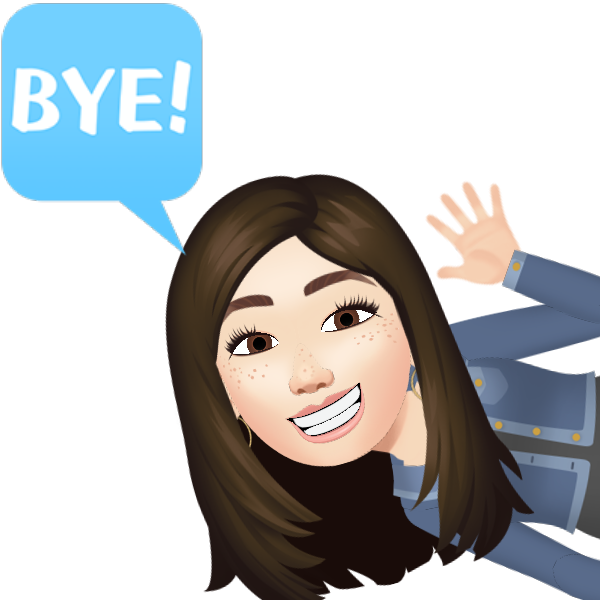

Chaos é um terráqueo pequeno, de pele branca e bochechas vermelhas que aparece no manga Dragon Ball e nos animes Dragon Ball e Dragon Ball Z, também fazendo pequenas aparições em Dragon Ball GT e Dragon Ball Super. Ele é a companhia constante de Tenshinhan, seu melhor amigo, e junto com ele, era um dos alunos de Mestre Tsuru.
Tenshinhan, também chamado apenas de Ten ou Tenshin, é um antigo antagonista e protagonista de suporte no manga Dragon Ball e nos animes Dragon Ball e Dragon Ball Z, também fazendo algumas aparências em Dragon Ball GT. Ele é introduzido ao fim da saga Vovó Uranai no anime, e no começo da saga Tenshinhan no manga. Altamente devotado às artes marciais, reclusivo e disciplinado, Tenshinhan é um dos terráqueos mais fortes do mundo Dragon Ball. Ele batalha junto com outros Guerreiros Z quando ameaças aparecem na Terra, e corajosamente engajando com inimigos bem mais poderosos que ele. Porém, ele passa a maior parte de seu tempo treinando com seu melhor amigo, Chaos.
Mestre Kame, também conhecido no manga como Muten Roshi é um protagonista de suporte em Dragon Ball, que aparece no anime Dragon Ball, Dragon Ball Z, Dragon Ball GT e Dragon Ball Super.
Mestre Kame é um antigo e sábio mestre de artes marciais, e o primeiro personagem a usar o conhecido Kamehameha. Embora ele pareça frágil, Kame é na verdade um guerreiro poderoso. Ele treinou Vovô Gohan, Rei Cutelo, Goku, Kuririn e Yamcha. Mestre Kame é ambos os arquétipos velho sábio e velho pervertido, o último sendo típico de mangas "shonen". Às vezes, ele fica irritado, e produz alívio cômico. Seus companheiros são geralmente Oolong, Tartaruga, e Launch. Sua casa é a Casa do Kame, uma casa numa ilha isolada que serve como local de encontro para seus amigos.
Kuririn é um protagonista em Dragon Ball. Kuririn teve uma breve rivalidade com Goku quando se conheceram e treinaram com Mestre Kame, mas eles logo viraram melhores amigos. Um dos mais poderosos e talentosos Terráqueos, Kuririn é corajoso, um aliado fiel e bom. Ele é um Guerreiro Z prominente, embora seja sempre dominado pelos inimigos. Sua baixa estatura e carequice (com a exceção de quando ele deixa seu cabelo crescer na saga Majin Boo) ajudam a criar alívio cômico durante momentos tensos. Durante a metade final de Dragon Ball Z, ele se aposenta das lutas, optando a estabelecer-se com sua família, sendo o esposo de Androide 18 e pai de Marron.
